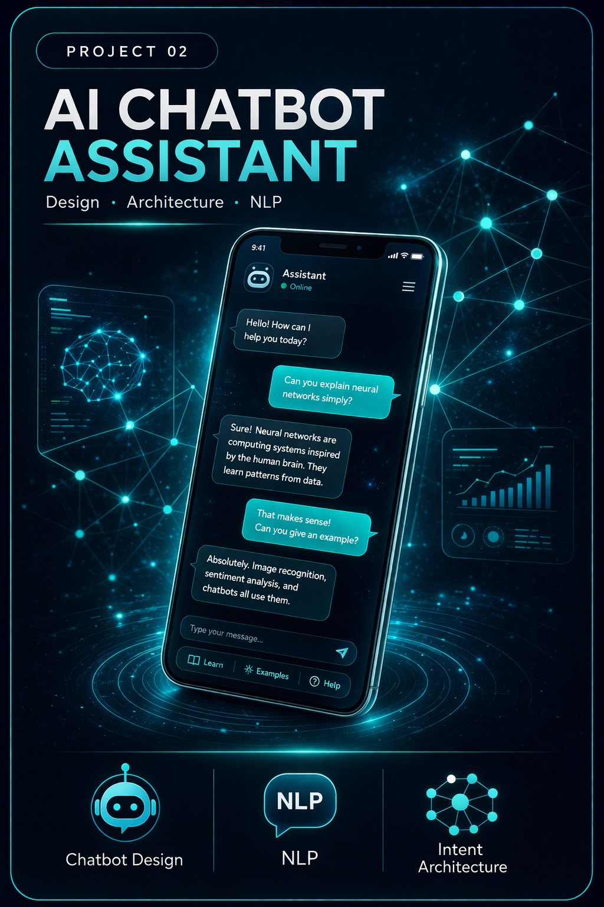

Portfolio
Featured Projects

Academic · AI/ML · Visual Design
The AI Odyssey: Visual Timeline (1950–2025)
A visual infographic timeline tracing AI evolution from early symbolic systems to modern generative AI. Designed in Figma with color-coded eras and visual hierarchy.
FigmaNotebookLMAI History

Enterprise · Retail AI · NLP
NLP Chatbot — Retail E-Commerce Platform
Architected and deployed an AI-powered NLP chatbot reducing customer support volume by 25% and enabling 24/7 personalized engagement at scale for a major retail brand.
NLPChatbot ArchitectureAPI IntegrationKPIs

Academic · Machine Learning · Research
ML vs Deep Learning: Automotive Case Study
Comparative analysis through two real-world automotive applications — GM OnStar churn prediction using ML and Waymo autonomous driving using deep learning.
Machine LearningDeep LearningAutomotive AI

Academic · AI Ethics · Leadership
Architecting Fair Automotive AI
Research presentation exploring bias, fairness, and ethical AI design in automotive systems with actionable leadership frameworks for practitioners.
AI EthicsCognitive BiasExplainable AI

Enterprise · Healthcare AI · IBM Watson
IBM Watson Healthcare AI Assistant
Led architecture for an IBM Watson virtual assistant across a large US healthcare network. Reduced administrative effort by 40% with HIPAA-compliant clinical AI.
IBM WatsonHIPAANLPEHR

Academic · Data Analytics · Python
Netflix Data Analytics — The $1B Content Strategy
Analyzed 8,807 Netflix titles using Excel and Python. Uncovered content trends, genre distributions, and the personalization strategy saving Netflix $1 billion annually.
PythonExcelData FusionPower BI